OBRUK
Logo and Brand
Download the OBRUK logo in high resolution for joint projects, news and publications. PNG files have transparent backgrounds.
Complete logo package
All colours and formats (SVG, PNG, JPG) in one file.



Logo · white


o'mag mark · black



o'mag mark · white


Usage guidelines
- Do not stretch, skew or rotate the logo.
- Use only the black, white or cream versions; do not add effects, shadows or outlines.
- Leave clear space around the logo at least the height of the letter "o".
- For print, use the SVG or the 4000 px PNG — never a screenshot.
- For joint projects, events and publications, simply let us know.
Colours
Basalt
#1E1B17Tuff
#F4EEE4Lamp
#E9A23BHematite
#A3452AAsh
#6B6258